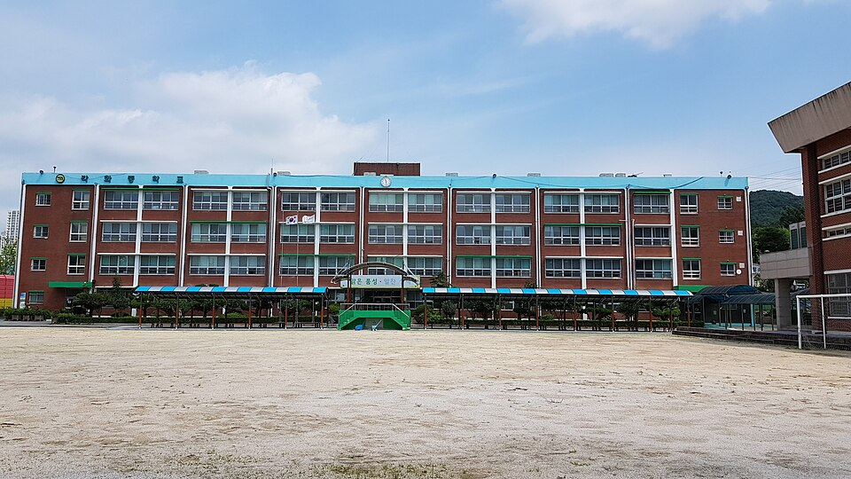

광주 북구는 학교가 한곳에 몰려 있지 않고 일곡·운암·용봉·문흥으로 나뉘어 흩어져 있습니다. 광주숭일고등학교·살레시오고등학교·고려고등학교·전남대학교사범대학부설고등학교 같은 고등학교와 일곡중학교·문흥중학교·운암중학교·용봉중학교가 각각 다른 생활권에 있습니다. 같은 북구라도 일곡에서 용두동까지는 버스로 한참이라, 저녁이 이동으로 묶이는 학생은 집으로 오는 1:1 중등 수학과외나 고등 영어과외를 따로 찾게 됩니다.
오늘은 광주 북구로 직접 찾아가는 선생님들 가운데 맡는 과목과 방문 동네가 다른 두 분을 소개합니다. 한 분은 수학을 중2부터 고3까지 보는 선생님, 한 분은 영어와 사회를 중3부터 고3까지 보는 선생님입니다.
북구에서 중등 수학과외 상담이 들어오는 시점은 대개 진도가 아니라 구멍입니다. 지금 단원이 막히는 이유가 한두 학기 전에 있는 경우가 많습니다. 이 선생님을 소개하는 이유는 범위가 분명해서입니다. 중학교 수학부터 고등학교 대수·미적분까지 한 사람이 이어서 봅니다. 중3에서 시작해 고2까지 선생님을 바꾸지 않아도 되고, 2022 개정 교육과정으로 과목 이름과 범위가 달라진 구간도 함께 짚습니다.
맡는 범위를 미리 분명히 해 두는 편입니다. 기하는 수업하지 않고, 중등 과학과 통합사회는 가능합니다. 수학을 중심으로 한 과목을 더 붙이고 싶을 때 선택지가 됩니다. 방문 동네는 북구 본촌동·용두동 쪽과 광산구 첨단·수완 쪽이며, 화상 수업도 됩니다.
김ㅇ서 선생님 상세 프로필 →북구에서 고등 영어과외를 따로 찾는 이유는 대개 한 가지입니다. 단어는 외웠는데 지문에서 답이 갈리기 때문입니다. 이 선생님을 소개하는 이유는 수업 바깥까지 보기 때문입니다. 영어 수업 시간에 전 과목 수행평가 일정을 같이 관리합니다. 고등학교에서 성적을 깎아 먹는 자리는 시험만이 아니라 밀린 수행평가인 경우가 많은데, 그 일정을 누가 같이 봐 주느냐에 따라 결과가 달라집니다.
영어는 중3부터, 사회는 고1부터 봅니다. 학습 계획을 세우는 쪽(플래닝)과 수행평가 쪽 과정을 각각 이수했고, 진로 상담 자격도 갖추고 있어 과목 공부와 진로 이야기를 한 자리에서 나눌 수 있습니다. 방문 동네는 운암동·삼각동·매곡동·오치동·일곡동이며, 화상 수업도 됩니다.
이ㅇ민 선생님 상세 프로필 →학교마다 진도와 시험 범위가 달라서, 학교별로 준비법을 따로 정리해 두었습니다.
👉 북구 수학과외 선생님 · 북구 영어과외 선생님 · 북구 관리 학교 전체 보기